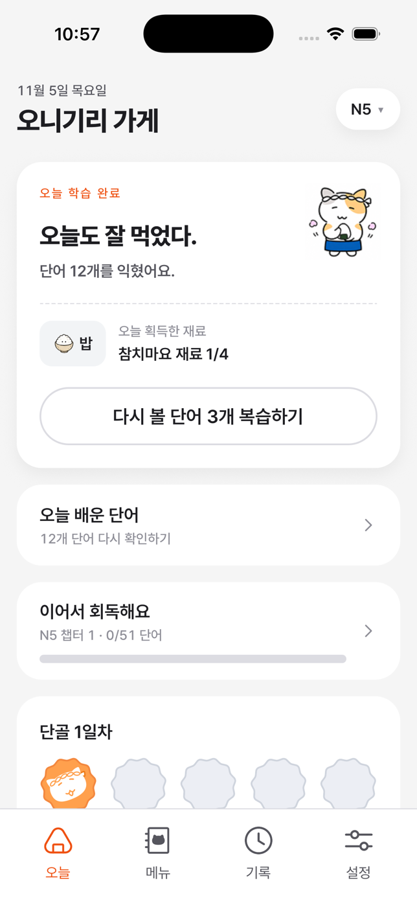

01 / 04
ONIKAN · 제품과 역할
매일 일본어 단어를 외우는 일을
가게에 들르듯 가볍게 만들었어요.
하루 20단어를 외우면 오니기리 재료가 쌓이는 일본어 단어 앱이에요.
디자이너 1명(저)과 개발자 1명이 만들어 iOS·Android에 출시했고, 지금도 업데이트하고 있어요.
누구를 위해
30–40대 직장인
기초 단어·문법은 있는데 문장이 안 트이는 학습자. 교재는 샀지만 출퇴근길에 잘 꺼내지 못해요.
학습 문제 · 인터뷰 5명
꾸준함 5 / 5
5명 모두 '의지·꾸준함'을 가장 어려운 점으로 꼽았어요. 한자 난이도를 최고점으로 준 사람도 3명.
“나를 채찍질해 줄 게 없어요”
그래서 정한 방향
짧게 · 매일 · 보이게
하루 학습을 출퇴근길에 끝낼 만큼 짧게 나누고, 외운 만큼 재료가 쌓이는 게 눈에 보이게 했어요.
나 · 디자이너리서치 · 학습 흐름 · UX/UI · 디자인 시스템 · 캐릭터 · 개발 스펙
개발자앱 구현 · 스토어 배포 · 코드 리뷰와 머지

02 / 04
핵심 학습 경험
하루 학습 → 결과 → 다시 학습,
외운 단어가 재료가 되는 한 바퀴

STEP 1
하루 학습
→

STEP 2
결과 · 재료 받기
→

STEP 3
다시 학습 · 복습
판단 1
평가 버튼은 두 개만 —
‘다시 볼래요’와 ‘한 번 익혔어요’
복습 간격은 기억 모델(FSRS)이 뒤에서 계산해요. 학습자는 ‘알았다 / 아직이다’만 고르면 돼요.
출퇴근길 한 손으로도 고민 없이 누를 수 있게, 버튼을 크게(56) 두 개로 정했어요.
판단 2
공부한 양을 보상으로 —
재료 4개 모으면 오니기리 완성
하루 학습을 마치면 재료 1개, 4개가 모이면 메뉴 하나가 완성돼요. 연속으로 오면 ‘단골 도장’이 쌓여요.
인터뷰에서 가장 큰 문제가 콘텐츠가 아니라 꾸준함이었기 때문에, ‘내일 또 올 이유’를 먼저 설계했어요.